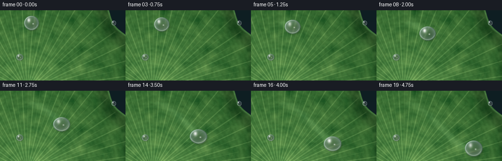
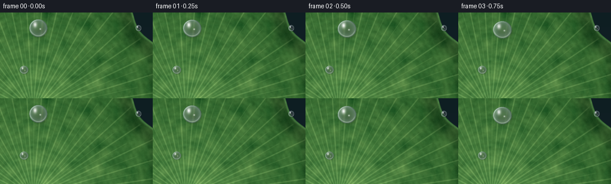

CODING AGENTS AS PIXEL WORLD MODELS
traex/Seed-2.1-Pro-0915 · phygen_036
点击播放 · 原生 RGB 像素
逐轮保存的候选
回放视频、检查图与代码变化。
每份候选均可单独播放。实际图片检查记录在下方工具轨迹中。
候选 01播放与检查图
点击播放 · 原生 RGB 像素


展开代码变化
--- 上一保存版本
+++ 本次保存版本
@@ -0,0 +1,238 @@
+"""Procedural text-to-video generation.
+
+Scene: a glistening dewdrop sliding across a textured lotus leaf.
+Renders 20 frames at 256x144 (4 fps) using only numpy + PIL geometry.
+"""
+import numpy as np
+from PIL import Image
+import artifact_io
+
+rng = np.random.default_rng(20261110)
+
+W, H, N, FPS = 256, 144, 20, 4.0
+SS = 2 # supersampling factor
+w2, h2 = W * SS, H * SS
+
+
+def smoothstep(e0, e1, x):
+ t = np.clip((x - e0) / (e1 - e0), 0.0, 1.0)
+ return t * t * (3 - 2 * t)
+
+
+# ---------------------------------------------------------------- leaf base
+def value_noise(gy, gx, octaves):
+ """Sum of upsampled random fields -> smooth variation in [-1, 1]."""
+ out = np.zeros((h2, w2), dtype=np.float32)
+ total = 0.0
+ for i, amp in enumerate((1.0, 0.55, 0.3)):
+ if i >= octaves:
+ break
+ grid = rng.standard_normal((gy * 2 ** i, gx * 2 ** i)).astype(np.float32)
+ up = np.asarray(
+ Image.fromarray(grid).resize((w2, h2), Image.BILINEAR), dtype=np.float32
+ )
+ out += amp * up
+ total += amp
+ return out / total
+
+
+def build_leaf():
+ yy, xx = np.mgrid[0:h2, 0:w2].astype(np.float32)
+ cx, cy = 110.0, h2 + 42.0 # leaf hub, just below the lower-left
+ dx, dy = xx - cx, yy - cy
+ r = np.hypot(dx, dy)
+ theta = np.arctan2(dy, dx)
+
+ edge = 468.0 + 15.0 * np.sin(13 * theta + 0.7) + 8.0 * np.sin(7 * theta + 2.1)
+ inside = 1.0 - smoothstep(edge - 2.0, edge + 2.0, r)
+
+ # pond / background
+ bg = np.zeros((h2, w2, 3), dtype=np.float32)
+ bg[..., 0] = 14 + 6 * (yy / h2)
+ bg[..., 1] = 30 + 8 * (1 - xx / w2)
+ bg[..., 2] = 34 + 6 * (yy / h2)
+
+ # base greens: radial light falloff + broad mottled patches
+ n_big = value_noise(10, 18, 2)
+ n_fine = value_noise(34, 60, 3)
+ radial = np.clip(r / edge, 0, 1.4)
+ base = np.empty((h2, w2, 3), dtype=np.float32)
+ base[..., 0] = 78 - 34 * radial + 14 * n_big + 5 * n_fine
+ base[..., 1] = 132 - 38 * radial + 12 * n_big + 6 * n_fine
+ base[..., 2] = 66 - 26 * radial + 8 * n_big + 4 * n_fine
+
+ # radiating lotus veins (primary and secondary dichotomous lines)
+ def vein_field(step_deg, width, boost, r_min, r_frac, offset_deg=0.0):
+ step = np.deg2rad(step_deg)
+ k = np.round((theta - offset_deg) / step)
+ target = k * step + offset_deg
+ dang = np.abs(np.arctan2(np.sin(theta - target), np.cos(theta - target)))
+ arc = r * dang
+ m = np.exp(-((arc / width) ** 2))
+ m *= smoothstep(r_min, r_min + 30, r) * (1 - smoothstep(edge * r_frac - 20, edge * r_frac, r))
+ return (m * boost)[..., None]
+
+ v = vein_field(8.5, 2.1, 30.0, 25, 0.985)
+ v += vein_field(8.5, 1.15, 16.0, 95, 0.80, offset_deg=np.deg2rad(4.25))
+ base += np.concatenate([v, v * 0.92, v * 0.7], axis=2)
+
+ # faint concentric growth rings
+ ring_m = (np.sin(r * 0.34 + n_big * 1.5) * 0.5 + 0.5) * 3.0
+ base += ring_m[..., None] * np.array([1, 1.4, 1], dtype=np.float32)
+
+ # cupped, darker rim with a thin bright wax edge
+ rim_dark = smoothstep(edge - 78, edge - 26, r) * (1 - smoothstep(edge - 8, edge, r))
+ base *= (1 - 0.22 * rim_dark)[..., None]
+ rim_lit = np.exp(-(((r - (edge - 4)) / 4.0) ** 2)) * smoothstep(edge - 30, edge - 12, r)
+ base += (rim_lit * 26)[..., None] * np.array([0.85, 1.0, 0.8], dtype=np.float32)
+
+ img = bg * (1 - inside[..., None]) + np.clip(base, 0, 255) * inside[..., None]
+ return np.clip(img, 0, 255)
+
+
+# ------------------------------------------------------------- droplet kit
+def sample_nearest(canvas, qx, qy):
+ ix = np.clip(np.rint(qx).astype(np.int32), 0, w2 - 1)
+ iy = np.clip(np.rint(qy).astype(np.int32), 0, h2 - 1)
+ return canvas[iy, ix]
+
+
+def draw_drop(canvas, x, y, R, squash=0.0, pulse=1.0, sparkle=0.0, chromatic=True):
+ """Draw one refractive water droplet centred at (x, y)."""
+ sx = 1.0 + squash
+ sy = 1.0 / sx
+ pad = int(R * 1.7) + 4
+ x0, x1 = max(int(x) - pad, 0), min(int(x) + pad, w2)
+ y0, y1 = max(int(y) - pad, 0), min(int(y) + pad, h2)
+ if x1 <= x0 or y1 <= y0:
+ return
+ gy, gx = np.mgrid[y0:y1, x0:x1].astype(np.float32)
+ qx = (gx - x) / (R * sx)
+ qy = (gy - y) / (R * sy)
+ rho2 = qx * qx + qy * qy
+ rho = np.sqrt(rho2)
+ body = (1.0 - smoothstep(0.985, 1.015, rho))[..., None]
+
+ # contact shadow, offset toward lower-right
+ sh_dx = (gx - x - R * 0.16) / (R * sx * 1.18)
+ sh_dy = (gy - y - R * 0.22) / (R * sy * 1.18)
+ sh_r = np.sqrt(sh_dx * sh_dx + sh_dy * sh_dy)
+ sh = (np.clip(1.0 - sh_r ** 1.6, 0, 1) * smoothstep(1.0, 0.7, sh_r) * 0.32)[..., None]
+ canvas[y0:y1, x0:x1] *= 1 - sh
+
+ # refraction: bulge-magnified leaf below, slight RGB split for glisten
+ scales = (0.535, 0.555, 0.575) if chromatic else (0.555, 0.555, 0.555)
+ refr = np.empty((y1 - y0, x1 - x0, 3), dtype=np.float32)
+ for c, sc in enumerate(scales):
+ refr[..., c] = sample_nearest(canvas[..., c], x + (gx - x) * sc / sx,
+ y + (gy - y) * sc / sy)
+ f = rho2
+ shade = 1.0 - 0.20 * f
+ fres = np.clip(0.10 + 0.34 * f ** 1.1, 0, 0.55)
+ rim_tint = np.array([196, 218, 226], dtype=np.float32)
+ drop = refr * shade[..., None]
+ drop = drop * (1 - fres[..., None]) + rim_tint * fres[..., None]
+
+ # dark contact outline + bright wax rim, lit from upper-left
+ outline = (smoothstep(0.90, 0.975, rho) * (1 - smoothstep(0.975, 1.0, rho)) * 0.45)[..., None]
+ drop = drop * (1 - outline) + np.array([22, 46, 30], dtype=np.float32) * outline
+ rim_arc = np.exp(-(((rho - 0.94) / 0.05) ** 2)) * np.clip(-(qx * 0.75 + qy * 0.55), 0, 1)
+ drop += (rim_arc * 95)[..., None]
+ caustic = np.exp(-(((rho - 0.86) / 0.06) ** 2)) * smoothstep(0.05, 0.45, qy)
+ drop += (caustic * 38)[..., None] * np.array([1.0, 0.96, 0.82], dtype=np.float32)
+
+ # primary soft specular highlight and a small companion glint
+ h1 = np.exp(-(((qx + 0.36) / 0.20) ** 2 + ((qy + 0.40) / 0.30) ** 2)) * pulse
+ h2m = np.exp(-(((qx - 0.22) / 0.09) ** 2 + ((qy - 0.10) / 0.09) ** 2)) * (0.6 + 0.4 * pulse)
+ spec = np.clip(h1 * 0.95 + h2m * 0.7, 0, 1) * (rho < 1.0)
+ drop = drop * (1 - spec[..., None]) + 255 * spec[..., None]
+
+ # twinkling star point on the lit rim
+ if sparkle > 0:
+ ang = -2.35
+ sxp = 0.82 * np.cos(ang)
+ syp = 0.82 * np.sin(ang)
+ star = np.exp(-((((gx - (x + sxp * R * sx)) / 1.6) ** 2 +
+ ((gy - (y + syp * R * sy)) / 1.6) ** 2))) * sparkle
+ drop = np.maximum(drop, star[..., None] * 255)
+
+ canvas[y0:y1, x0:x1] = canvas[y0:y1, x0:x1] * (1 - body) + np.clip(drop, 0, 255) * body
+
+
+def bezier(p0, p1, p2, p3, u):
+ a = (1 - u) ** 3
+ b = 3 * (1 - u) ** 2 * u
+ c = 3 * (1 - u) * u ** 2
+ d = u ** 3
+ return a * p0 + b * p1 + c * p2 + d * p3
+
+
+def main():
+ leaf = build_leaf()
+
+ # a couple of tiny stationary dewdrops enrich the waxy leaf surface
+ static = leaf.copy()
+ draw_drop(static, 40 * SS, 96 * SS, 7 * SS, squash=0.02, pulse=0.9, chromatic=False)
+ draw_drop(static, 232 * SS, 26 * SS, 5 * SS, squash=-0.02, pulse=1.0, chromatic=False)
+
+ # graceful curved slide, gravity-like easing
+ p0 = np.array([64.0, 26.0]) * SS
+ p1 = np.array([122.0, 38.0]) * SS
+ p2 = np.array([148.0, 122.0]) * SS
+ p3 = np.array([198.0, 118.0]) * SS
+ ts = np.arange(N, dtype=np.float32) / (N - 1)
+ pos, rad = [], []
+ for t in ts:
+ u = t ** 1.55
+ pos.append(bezier(p0, p1, p2, p3, u))
+ rad.append(SS * (15.0 + 2.2 * u))
+
+ trail = np.zeros((h2, w2), dtype=np.float32) # fading glossy wake
+ frames = []
+ prev = pos[0]
+ for i in range(N):
+ x, y = pos[i]
+ R = rad[i]
+ trail *= 0.94
+ seg = np.hypot(*(pos[i] - prev))
+ steps = max(int(seg / 5), 1)
+ for j in range(steps + 1):
+ sx, sy = prev + (pos[i] - prev) * (j / max(steps, 1))
+ x0, x1 = int(sx - R), int(sx + R) + 1
+ y0, y1 = int(sy - R), int(sy + R) + 1
+ gy, gx = np.mgrid[y0:y1, x0:x1].astype(np.float32)
+ band = np.exp(-(((gx - sx) ** 2 + (gy - sy) ** 2) / (2 * (R * 0.32) ** 2)))
+ tx0, tx1 = max(y0, 0), min(y1, h2)
+ ty0, ty1 = max(x0, 0), min(x1, w2)
+ trail[tx0:tx1, ty0:ty1] = np.maximum(
+ trail[tx0:tx1, ty0:ty1],
+ band[tx0 - y0:tx1 - y0, ty0 - x0:ty1 - x0] * 0.55,
+ )
+ prev = pos[i]
+
+ frame = static.copy()
+ a = trail[..., None]
+ wet = np.array([156, 196, 132], dtype=np.float32)
+ frame = frame * (1 - a * 0.28) + wet * a * 0.28
+ frame += a * 26 * np.array([0.8, 1.0, 0.75], dtype=np.float32)
+
+ v = np.linalg.norm(pos[min(i + 1, N - 1)] - pos[max(i - 1, 0)])
+ squash = np.clip(v / float(SS) * 0.004, 0, 0.09)
+ pulse = 0.85 + 0.15 * np.sin(i * 0.9 + 0.4)
+ sparkle = max(0.0, np.sin(i * 1.7)) ** 6
+ draw_drop(frame, x, y, R, squash=squash, pulse=pulse, sparkle=sparkle)
+
+ small = np.asarray(
+ Image.fromarray(np.clip(frame, 0, 255).astype(np.uint8)).resize(
+ (W, H), Image.LANCZOS
+ )
+ )
+ frames.append(small)
+
+ frames = np.stack(frames).astype(np.uint8)
+ artifact_io.save(frames, ".")
+ print("saved", frames.shape)
+
+
+if __name__ == "__main__":
+ main()
可观测工具轨迹
实际执行的命令与返回图片。
命令 1exit 0
/bin/bash -lc 'ls -la; cat prompt.txt; echo ---; cat GENERATION_RULES.md; echo ---; cat task_spec.json'
命令 2exit 0
/bin/bash -lc 'cat artifact_io.py; echo ---; head -50 player_template.html; echo ---; python3 -c "import numpy, PIL; print(numpy.__version__, PIL.__version__)"'
命令 3exit 1
/bin/bash -lc 'cd . && time python3 generate.py'
命令 4exit 0
/bin/bash -lc 'cd . && time python3 generate.py && ls -la frames | head'
视觉工具实际返回图片 1

保存候选 1 份；完成命令 4 次；可验证图片返回 1 张。原始 API 响应与完整日志保留在本地。